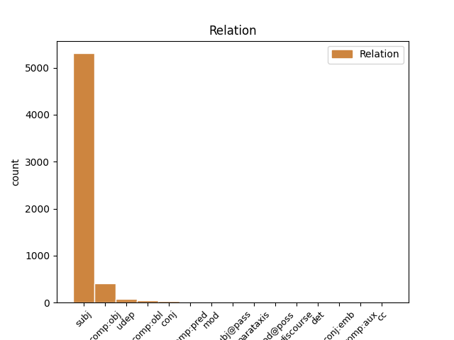
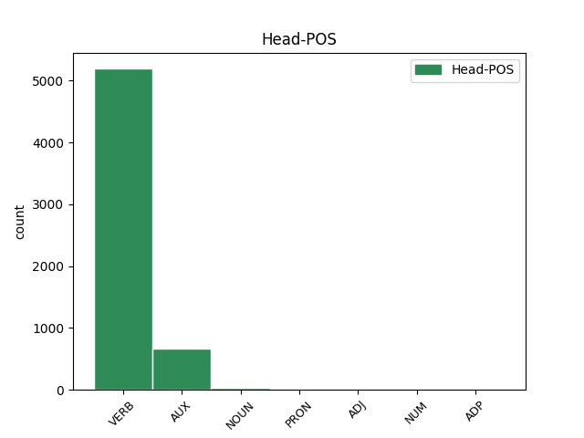
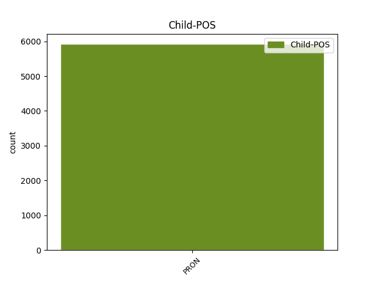

Distribution of features within this leaf



Agreement Rules sorted by frequency.
- When the dependent token is the subject(subj) of the head token, and the head token is VERB and the dependent token is PRON.
1 Hann _ _ _ _ 0 _ _ _
2 tók _ _ _ _ 0 _ _ _
3 ímóti _ _ _ _ 0 _ _ _
4 honum _ _ _ _ 0 _ _ _
5 , _ _ _ _ 0 _ _ _
6 gav _ _ _ _ 0 _ _ _
7 honum _ _ _ _ 0 _ _ _
8 nýggjan _ _ _ _ 0 _ _ _
9 búna _ _ _ _ 0 _ _ _
10 , _ _ _ _ 0 _ _ _
11 helt _ _ _ _ 0 _ _ _
12 veitslu _ _ _ _ 0 _ _ _
13 fyri _ _ _ _ 0 _ _ _
14 honum- _ _ _ _ 0 _ _ _
15 og _ _ _ _ 0 _ _ _
16 gjørdi gjørdi VERB _ Mood=Ind|Number=Sing|Person=3|Tense=Past|VerbForm=Fin|Voice=Act 0 _ _ _
17 hann hann PRON _ Case=Nom|Gender=Masc|Number=Sing|Person=3|PronType=Prs 16 subj _ _
18 til _ _ _ _ 0 _ _ _
19 umboð _ _ _ _ 0 _ _ _
20 Sítt _ _ _ _ 0 _ _ _
21 aftur _ _ _ _ 0 _ _ _
22 . _ _ _ _ 0 _ _ _
1 Hann Hann PRON _ Case=Nom|Number=Sing|Person=3|PronType=Prs 2 subj _ _
2 var vere AUX _ Mood=Ind|Number=Sing|Person=3|Tense=Past|VerbForm=Fin|Voice=Act 0 _ _ _
3 ein _ _ _ _ 0 _ _ _
4 formyndandi _ _ _ _ 0 _ _ _
5 gumpur _ _ _ _ 0 _ _ _
6 , _ _ _ _ 0 _ _ _
7 men _ _ _ _ 0 _ _ _
8 ókey _ _ _ _ 0 _ _ _
9 annars _ _ _ _ 0 _ _ _
10 . _ _ _ _ 0 _ _ _
1 Set setan VERB _ Mood=Imp|Number=Sing|Person=2|VerbForm=Fin 0 _ _ _
2 teg tu PRON _ Case=Acc|Number=Sing|Person=2|PronType=Prs 1 comp:obj _ _
3 tí _ _ _ _ 0 _ _ _
4 í _ _ _ _ 0 _ _ _
5 samband _ _ _ _ 0 _ _ _
6 við _ _ _ _ 0 _ _ _
7 flogfelagið _ _ _ _ 0 _ _ _
8 ella _ _ _ _ 0 _ _ _
9 floghavnina _ _ _ _ 0 _ _ _
10 fyri _ _ _ _ 0 _ _ _
11 at _ _ _ _ 0 _ _ _
12 frætta _ _ _ _ 0 _ _ _
13 nærri _ _ _ _ 0 _ _ _
14 . _ _ _ _ 0 _ _ _
1 Hann _ _ _ _ 0 _ _ _
2 tók _ _ _ _ 0 _ _ _
3 ímóti _ _ _ _ 0 _ _ _
4 honum _ _ _ _ 0 _ _ _
5 , _ _ _ _ 0 _ _ _
6 gav gi VERB _ Mood=Ind|Number=Sing|Person=3|Tense=Past|VerbForm=Fin|Voice=Act 0 _ _ _
7 honum honš PRON _ Case=Dat|Gender=Masc|Number=Plur|Person=3|PronType=Prs 6 comp:obl _ _
8 nýggjan _ _ _ _ 0 _ _ _
9 búna _ _ _ _ 0 _ _ _
10 , _ _ _ _ 0 _ _ _
11 helt _ _ _ _ 0 _ _ _
12 veitslu _ _ _ _ 0 _ _ _
13 fyri _ _ _ _ 0 _ _ _
14 honum- _ _ _ _ 0 _ _ _
15 og _ _ _ _ 0 _ _ _
16 gjørdi _ _ _ _ 0 _ _ _
17 hann _ _ _ _ 0 _ _ _
18 til _ _ _ _ 0 _ _ _
19 umboð _ _ _ _ 0 _ _ _
20 Sítt _ _ _ _ 0 _ _ _
21 aftur _ _ _ _ 0 _ _ _
22 . _ _ _ _ 0 _ _ _
1 Hann _ _ _ _ 0 _ _ _
2 tók _ _ _ _ 0 _ _ _
3 ímóti _ _ _ _ 0 _ _ _
4 honum _ _ _ _ 0 _ _ _
5 , _ _ _ _ 0 _ _ _
6 gav _ _ _ _ 0 _ _ _
7 honum _ _ _ _ 0 _ _ _
8 nýggjan _ _ _ _ 0 _ _ _
9 búna _ _ _ _ 0 _ _ _
10 , _ _ _ _ 0 _ _ _
11 helt _ _ _ _ 0 _ _ _
12 veitslu _ _ _ _ 0 _ _ _
13 fyri fyri VERB _ Mood=Ind|Number=Sing|Person=3|Tense=Past|VerbForm=Fin|Voice=Act 0 _ _ _
14 honum- honum- PRON _ Case=Dat|Gender=Masc|Number=Sing|Person=3|PronType=Prs 13 udep _ _
15 og _ _ _ _ 0 _ _ _
16 gjørdi _ _ _ _ 0 _ _ _
17 hann _ _ _ _ 0 _ _ _
18 til _ _ _ _ 0 _ _ _
19 umboð _ _ _ _ 0 _ _ _
20 Sítt _ _ _ _ 0 _ _ _
21 aftur _ _ _ _ 0 _ _ _
22 . _ _ _ _ 0 _ _ _
1 Sjúkrarøktarfrøðingurin _ _ _ _ 0 _ _ _
2 var _ _ _ _ 0 _ _ _
3 saman _ _ _ _ 0 _ _ _
4 við _ _ _ _ 0 _ _ _
5 manninum _ _ _ _ 0 _ _ _
6 og _ _ _ _ 0 _ _ _
7 einum _ _ _ _ 0 _ _ _
8 soni _ _ _ _ 0 _ _ _
9 í _ _ _ _ 0 _ _ _
10 bilinum _ _ _ _ 0 _ _ _
11 , _ _ _ _ 0 _ _ _
12 og _ _ _ _ 0 _ _ _
13 hon _ _ _ _ 0 _ _ _
14 gav _ _ _ _ 0 _ _ _
15 boð _ _ _ _ 0 _ _ _
16 um _ _ _ _ 0 _ _ _
17 , _ _ _ _ 0 _ _ _
18 at _ _ _ _ 0 _ _ _
19 halda _ _ _ _ 0 _ _ _
20 Torstein _ _ _ _ 0 _ _ _
21 føstum _ _ _ _ 0 _ _ _
22 í _ _ _ _ 0 _ _ _
23 setrinum _ _ _ _ 0 _ _ _
24 , _ _ _ _ 0 _ _ _
25 tí _ _ _ _ 0 _ _ _
26 hon hon PRON _ Case=Nom|Gender=Fem|Number=Sing|Person=3|PronType=Prs 29 subj _ _
27 kundi _ _ _ _ 0 _ _ _
28 ikki _ _ _ _ 0 _ _ _
29 siga siga NOUN _ Mood=Ind|Number=Sing|Person=3|Tense=Past|VerbForm=Fin|Voice=Act 0 _ _ _
30 , _ _ _ _ 0 _ _ _
31 um _ _ _ _ 0 _ _ _
32 hann _ _ _ _ 0 _ _ _
33 hevði _ _ _ _ 0 _ _ _
34 brotið _ _ _ _ 0 _ _ _
35 ryggin _ _ _ _ 0 _ _ _
36 . _ _ _ _ 0 _ _ _
1 Um _ _ _ _ 0 _ _ _
2 hugt _ _ _ _ 0 _ _ _
3 verður _ _ _ _ 0 _ _ _
4 eftir _ _ _ _ 0 _ _ _
5 søguligu _ _ _ _ 0 _ _ _
6 tølunum _ _ _ _ 0 _ _ _
7 fyri fyr VERB _ Mood=Ind|Number=Sing|Person=3|Tense=Pres|VerbForm=Fin|Voice=Act 0 _ _ _
8 útreiðsluvøkstur _ _ _ _ 0 _ _ _
9 landskassans _ _ _ _ 0 _ _ _
10 seinnu _ _ _ _ 0 _ _ _
11 árini _ _ _ _ 0 _ _ _
12 sæst _ _ _ _ 0 _ _ _
13 , _ _ _ _ 0 _ _ _
14 hvussu _ _ _ _ 0 _ _ _
15 torfør _ _ _ _ 0 _ _ _
16 henda _ _ _ _ 0 _ _ _
17 uppgáva _ _ _ _ 0 _ _ _
18 er vere PRON _ Mood=Ind|Number=Sing|Person=3|Tense=Pres|VerbForm=Fin|Voice=Act 7 conj _ _
19 . _ _ _ _ 0 _ _ _
1 Fundur _ _ _ _ 0 _ _ _
2 hevur _ _ _ _ 0 _ _ _
3 verið _ _ _ _ 0 _ _ _
4 millum _ _ _ _ 0 _ _ _
5 løgregluna _ _ _ _ 0 _ _ _
6 og _ _ _ _ 0 _ _ _
7 sløkkiliðið _ _ _ _ 0 _ _ _
8 í _ _ _ _ 0 _ _ _
9 morgun _ _ _ _ 0 _ _ _
10 , _ _ _ _ 0 _ _ _
11 og _ _ _ _ 0 _ _ _
12 var _ _ _ _ 0 _ _ _
13 hann hann PRON _ Case=Nom|Gender=Masc|Number=Sing|Person=3|PronType=Prs 15 subj _ _
14 liðugur _ _ _ _ 0 _ _ _
15 fyri fyri ADJ _ Mood=Ind|Number=Sing|Person=3|Tense=Past|VerbForm=Fin|Voice=Act 0 _ _ _
16 eini _ _ _ _ 0 _ _ _
17 løtu _ _ _ _ 0 _ _ _
18 síðani _ _ _ _ 0 _ _ _
19 . _ _ _ _ 0 _ _ _
1 Tey _ _ _ _ 0 _ _ _
2 ið _ _ _ _ 0 _ _ _
3 hava _ _ _ _ 0 _ _ _
4 stemma _ _ _ _ 0 _ _ _
5 " _ _ _ _ 0 _ _ _
6 Eitt _ _ _ _ 0 _ _ _
7 sindur _ _ _ _ 0 _ _ _
8 for _ _ _ _ 0 _ _ _
9 lagaligt _ _ _ _ 0 _ _ _
10 " _ _ _ _ 0 _ _ _
11 ella _ _ _ _ 0 _ _ _
12 lægri _ _ _ _ 0 _ _ _
13 eru _ _ _ _ 0 _ _ _
14 heilt _ _ _ _ 0 _ _ _
15 sikkurt _ _ _ _ 0 _ _ _
16 tey teyn PRON _ Case=Nom|Number=Plur|Person=2|PronType=Prs 0 _ _ _
17 ið _ _ _ _ 0 _ _ _
18 stemma _ _ _ _ 0 _ _ _
19 uppá _ _ _ _ 0 _ _ _
20 Miðflokkin _ _ _ _ 0 _ _ _
21 . _ _ _ _ 0 _ _ _
22 2009 _ _ _ _ 0 _ _ _
23 - _ _ _ _ 0 _ _ _
24 11 _ _ _ _ 0 _ _ _
25 - _ _ _ _ 0 _ _ _
26 19 _ _ _ _ 0 _ _ _
27 at _ _ _ _ 0 _ _ _
28 11:32 _ _ _ _ 0 _ _ _
29 PM _ _ _ _ 0 _ _ _
30 - _ _ _ _ 0 _ _ _
31 Grein _ _ _ _ 0 _ _ _
32 : _ _ _ _ 0 _ _ _
33 Tey tey PRON _ Case=Nom|Number=Plur|Person=2|PronType=Prs 16 conj _ _
34 ið _ _ _ _ 0 _ _ _
35 hava _ _ _ _ 0 _ _ _
36 stemma _ _ _ _ 0 _ _ _
37 " _ _ _ _ 0 _ _ _
38 Eitt _ _ _ _ 0 _ _ _
39 sindur _ _ _ _ 0 _ _ _
40 for _ _ _ _ 0 _ _ _
41 lagaligt _ _ _ _ 0 _ _ _
42 " _ _ _ _ 0 _ _ _
43 ella _ _ _ _ 0 _ _ _
44 lægri _ _ _ _ 0 _ _ _
45 eru _ _ _ _ 0 _ _ _
46 heilt _ _ _ _ 0 _ _ _
47 sikkurt _ _ _ _ 0 _ _ _
48 tey _ _ _ _ 0 _ _ _
49 ið _ _ _ _ 0 _ _ _
50 stemma _ _ _ _ 0 _ _ _
51 uppá _ _ _ _ 0 _ _ _
52 Miðflokkin _ _ _ _ 0 _ _ _
53 . _ _ _ _ 0 _ _ _
1 Far _ _ _ _ 0 _ _ _
2 inn _ _ _ _ 0 _ _ _
3 á _ _ _ _ 0 _ _ _
4 " _ _ _ _ 0 _ _ _
5 Gjald _ _ _ _ 0 _ _ _
6 á _ _ _ _ 0 _ _ _
7 netinum _ _ _ _ 0 _ _ _
8 " _ _ _ _ 0 _ _ _
9 og _ _ _ _ 0 _ _ _
10 fylg _ _ _ _ 0 _ _ _
11 leiðbeiningini _ _ _ _ 0 _ _ _
12 , _ _ _ _ 0 _ _ _
13 so _ _ _ _ 0 _ _ _
14 ert ert VERB _ Mood=Ind|Number=Sing|Person=2|Tense=Pres|VerbForm=Fin 0 _ _ _
15 tú tú PRON _ Case=Nom|Number=Sing|Person=2|PronType=Prs 14 comp:pred _ _
16 í _ _ _ _ 0 _ _ _
17 gongd _ _ _ _ 0 _ _ _
18 . _ _ _ _ 0 _ _ _
1 Vert _ _ _ _ 0 _ _ _
2 var vere AUX _ Mood=Ind|Number=Sing|Person=3|Tense=Past|VerbForm=Fin|Voice=Act 0 _ _ _
3 eisini eisini PRON _ Mood=Opt|Number=Sing|Person=3|Tense=Past|VerbForm=Fin|Voice=Act 2 comp:pred _ _
4 at _ _ _ _ 0 _ _ _
5 leggja _ _ _ _ 0 _ _ _
6 merki _ _ _ _ 0 _ _ _
7 til _ _ _ _ 0 _ _ _
8 , _ _ _ _ 0 _ _ _
9 hvussu _ _ _ _ 0 _ _ _
10 hjartaliga _ _ _ _ 0 _ _ _
11 hann _ _ _ _ 0 _ _ _
12 takkaði _ _ _ _ 0 _ _ _
13 bæði _ _ _ _ 0 _ _ _
14 fyrrverandi _ _ _ _ 0 _ _ _
15 og _ _ _ _ 0 _ _ _
16 núverandi _ _ _ _ 0 _ _ _
17 samgongu _ _ _ _ 0 _ _ _
18 ( _ _ _ _ 0 _ _ _
19 altso _ _ _ _ 0 _ _ _
20 ikki _ _ _ _ 0 _ _ _
21 í _ _ _ _ 0 _ _ _
22 Føroyum _ _ _ _ 0 _ _ _
23 ; _ _ _ _ 0 _ _ _
24 - _ _ _ _ 0 _ _ _
25 ) _ _ _ _ 0 _ _ _
26 fyri _ _ _ _ 0 _ _ _
27 teirra _ _ _ _ 0 _ _ _
28 vælvild _ _ _ _ 0 _ _ _
29 og _ _ _ _ 0 _ _ _
30 samstarv _ _ _ _ 0 _ _ _
31 í _ _ _ _ 0 _ _ _
32 øllum _ _ _ _ 0 _ _ _
33 fyrireikingararbeiðinum _ _ _ _ 0 _ _ _
34 . _ _ _ _ 0 _ _ _
1 4 _ _ _ _ 0 _ _ _
2 “ _ _ _ _ 0 _ _ _
3 Var vara AUX _ Mood=Ind|Number=Sing|Person=3|Tense=Past|VerbForm=Fin|Voice=Act 0 _ _ _
4 Jesus _ _ _ _ 0 _ _ _
5 føddur _ _ _ _ 0 _ _ _
6 í _ _ _ _ 0 _ _ _
7 Betlehem _ _ _ _ 0 _ _ _
8 ella ella PRON _ Case=Nom|Gender=Fem|Number=Sing|Person=3|PronType=Prs 3 subj@pass _ _
9 í _ _ _ _ 0 _ _ _
10 Nazaret _ _ _ _ 0 _ _ _
11 . _ _ _ _ 0 _ _ _
12 ” _ _ _ _ 0 _ _ _
1 Expires _ _ _ _ 0 _ _ _
2 : _ _ _ _ 0 _ _ _
3 Tue _ _ _ _ 0 _ _ _
4 , _ _ _ _ 0 _ _ _
5 27 _ _ _ _ 0 _ _ _
6 Jan _ _ _ _ 0 _ _ _
7 2015 _ _ _ _ 0 _ _ _
8 08:00:23 _ _ _ _ 0 _ _ _
9 GMT _ _ _ _ 0 _ _ _
10 Cache _ _ _ _ 0 _ _ _
11 - _ _ _ _ 0 _ _ _
12 control _ _ _ _ 0 _ _ _
13 : _ _ _ _ 0 _ _ _
14 Private _ _ _ _ 0 _ _ _
15 Tað _ _ _ _ 0 _ _ _
16 er vere AUX _ Mood=Ind|Number=Sing|Person=3|Tense=Pres|VerbForm=Fin 0 _ _ _
17 ongantíð _ _ _ _ 0 _ _ _
18 tín ton PRON _ Case=Gen|Number=Plur|Person=3|PronType=Prs 16 udep _ _
19 skuld _ _ _ _ 0 _ _ _
20 ! _ _ _ _ 0 _ _ _
1 Fyri _ _ _ _ 0 _ _ _
2 pør _ _ _ _ 0 _ _ _
3 var _ _ _ _ 0 _ _ _
4 støðan _ _ _ _ 0 _ _ _
5 soleiðis _ _ _ _ 0 _ _ _
6 , _ _ _ _ 0 _ _ _
7 at _ _ _ _ 0 _ _ _
8 tey tey PRON _ Case=Nom|Number=Plur|Person=2|PronType=Prs 17 subj _ _
9 , _ _ _ _ 0 _ _ _
10 ið _ _ _ _ 0 _ _ _
11 vóru _ _ _ _ 0 _ _ _
12 mest _ _ _ _ 0 _ _ _
13 eksperimenterandi _ _ _ _ 0 _ _ _
14 , _ _ _ _ 0 _ _ _
15 eisini _ _ _ _ 0 _ _ _
16 vórðu _ _ _ _ 0 _ _ _
17 tey teyn PRON _ Case=Nom|Number=Plur|Person=2|PronType=Prs 0 _ _ _
18 mest _ _ _ _ 0 _ _ _
19 nøgdu _ _ _ _ 0 _ _ _
20 við _ _ _ _ 0 _ _ _
21 sítt _ _ _ _ 0 _ _ _
22 sexlív _ _ _ _ 0 _ _ _
23 . _ _ _ _ 0 _ _ _
1 Hinvegin _ _ _ _ 0 _ _ _
2 skal _ _ _ _ 0 _ _ _
3 landsstýrismaðurin _ _ _ _ 0 _ _ _
4 tó _ _ _ _ 0 _ _ _
5 ikki _ _ _ _ 0 _ _ _
6 ivast _ _ _ _ 0 _ _ _
7 í _ _ _ _ 0 _ _ _
8 hjálpini _ _ _ _ 0 _ _ _
9 frá _ _ _ _ 0 _ _ _
10 Tjóðveldinum _ _ _ _ 0 _ _ _
11 , _ _ _ _ 0 _ _ _
12 táið _ _ _ _ 0 _ _ _
13 útvegir _ _ _ _ 0 _ _ _
14 skulu _ _ _ _ 0 _ _ _
15 finnast _ _ _ _ 0 _ _ _
16 fyri _ _ _ _ 0 _ _ _
17 at _ _ _ _ 0 _ _ _
18 fáa _ _ _ _ 0 _ _ _
19 hesi _ _ _ _ 0 _ _ _
20 viðurskiftini _ _ _ _ 0 _ _ _
21 í _ _ _ _ 0 _ _ _
22 rættlag _ _ _ _ 0 _ _ _
23 , _ _ _ _ 0 _ _ _
24 ið _ _ _ _ 0 _ _ _
25 hann hann PRON _ Case=Nom|Gender=Masc|Number=Sing|Person=3|PronType=Prs 27 mod _ _
26 nú _ _ _ _ 0 _ _ _
27 er vere VERB _ Mood=Ind|Number=Sing|Person=3|Tense=Pres|VerbForm=Fin|Voice=Act 0 _ _ _
28 so _ _ _ _ 0 _ _ _
29 illa _ _ _ _ 0 _ _ _
30 skølsettur _ _ _ _ 0 _ _ _
31 av _ _ _ _ 0 _ _ _
32 . _ _ _ _ 0 _ _ _
1 Tey _ _ _ _ 0 _ _ _
2 nýggjaru _ _ _ _ 0 _ _ _
3 tølini _ _ _ _ 0 _ _ _
4 frá _ _ _ _ 0 _ _ _
5 1994 _ _ _ _ 0 _ _ _
6 til _ _ _ _ 0 _ _ _
7 2007 _ _ _ _ 0 _ _ _
8 , _ _ _ _ 0 _ _ _
9 eru erun AUX _ Mood=Imp|Number=Sing|Person=2|VerbForm=Fin 0 _ _ _
10 tó _ _ _ _ 0 _ _ _
11 øll _ _ _ _ 0 _ _ _
12 lág _ _ _ _ 0 _ _ _
13 ( _ _ _ _ 0 _ _ _
14 liggja _ _ _ _ 0 _ _ _
15 undir _ _ _ _ 0 _ _ _
16 0.15 _ _ _ _ 0 _ _ _
17 mg _ _ _ _ 0 _ _ _
18 / _ _ _ _ 0 _ _ _
19 kg _ _ _ _ 0 _ _ _
20 ) _ _ _ _ 0 _ _ _
21 , _ _ _ _ 0 _ _ _
22 meðan _ _ _ _ 0 _ _ _
23 tey teyn PRON _ Case=Nom|Number=Plur|Person=2|PronType=Prs 9 mod _ _
24 hægru _ _ _ _ 0 _ _ _
25 virðini _ _ _ _ 0 _ _ _
26 eru _ _ _ _ 0 _ _ _
27 funnin _ _ _ _ 0 _ _ _
28 í _ _ _ _ 0 _ _ _
29 fiskasýnum _ _ _ _ 0 _ _ _
30 frá _ _ _ _ 0 _ _ _
31 áðrenn _ _ _ _ 0 _ _ _
32 1994 _ _ _ _ 0 _ _ _
33 . _ _ _ _ 0 _ _ _
1 Her _ _ _ _ 0 _ _ _
2 eru _ _ _ _ 0 _ _ _
3 10 _ _ _ _ 0 _ _ _
4 tey _ _ _ _ 0 _ _ _
5 best _ _ _ _ 0 _ _ _
6 umtóktu _ _ _ _ 0 _ _ _
7 versini _ _ _ _ 0 _ _ _
8 í _ _ _ _ 0 _ _ _
9 2014 _ _ _ _ 0 _ _ _
10 : _ _ _ _ 0 _ _ _
11 1 _ _ _ _ 0 _ _ _
12 ) _ _ _ _ 0 _ _ _
13 Jóhannes _ _ _ _ 0 _ _ _
14 3 _ _ _ _ 0 _ _ _
15 : _ _ _ _ 0 _ _ _
16 16 _ _ _ _ 0 _ _ _
17 : _ _ _ _ 0 _ _ _
18 Tí _ _ _ _ 0 _ _ _
19 at _ _ _ _ 0 _ _ _
20 so _ _ _ _ 0 _ _ _
21 elskaði _ _ _ _ 0 _ _ _
22 Guð _ _ _ _ 0 _ _ _
23 heimin _ _ _ _ 0 _ _ _
24 , _ _ _ _ 0 _ _ _
25 at _ _ _ _ 0 _ _ _
26 hann _ _ _ _ 0 _ _ _
27 gav _ _ _ _ 0 _ _ _
28 son son PRON _ Case=Nom|Number=Sing|Person=3|PronType=Prs 29 det _ _
29 sín sín PRON _ Case=Acc|Gender=Masc|Number=Sing|Person=3|PronType=Prs|Reflex=Yes 0 _ _ _
30 , _ _ _ _ 0 _ _ _
31 hin _ _ _ _ 0 _ _ _
32 einborna _ _ _ _ 0 _ _ _
33 , _ _ _ _ 0 _ _ _
34 til _ _ _ _ 0 _ _ _
35 tess _ _ _ _ 0 _ _ _
36 at _ _ _ _ 0 _ _ _
37 ein _ _ _ _ 0 _ _ _
38 og _ _ _ _ 0 _ _ _
39 hvør _ _ _ _ 0 _ _ _
40 , _ _ _ _ 0 _ _ _
41 sum _ _ _ _ 0 _ _ _
42 trýr _ _ _ _ 0 _ _ _
43 á _ _ _ _ 0 _ _ _
44 hann _ _ _ _ 0 _ _ _
45 , _ _ _ _ 0 _ _ _
46 ikki _ _ _ _ 0 _ _ _
47 skal _ _ _ _ 0 _ _ _
48 glatast _ _ _ _ 0 _ _ _
49 , _ _ _ _ 0 _ _ _
50 men _ _ _ _ 0 _ _ _
51 hava _ _ _ _ 0 _ _ _
52 ævigt _ _ _ _ 0 _ _ _
53 lív _ _ _ _ 0 _ _ _
54 . _ _ _ _ 0 _ _ _
1 Eingin _ _ _ _ 0 _ _ _
2 teirra _ _ _ _ 0 _ _ _
3 er _ _ _ _ 0 _ _ _
4 komin _ _ _ _ 0 _ _ _
5 út _ _ _ _ 0 _ _ _
6 í _ _ _ _ 0 _ _ _
7 pappírsbók _ _ _ _ 0 _ _ _
8 , _ _ _ _ 0 _ _ _
9 men _ _ _ _ 0 _ _ _
10 eru _ _ _ _ 0 _ _ _
11 tøkar _ _ _ _ 0 _ _ _
12 á _ _ _ _ 0 _ _ _
13 sprotin.fo _ _ _ _ 0 _ _ _
14 . _ _ _ _ 0 _ _ _
15 Til _ _ _ _ 0 _ _ _
16 stuttleika _ _ _ _ 0 _ _ _
17 kann _ _ _ _ 0 _ _ _
18 nevnast _ _ _ _ 0 _ _ _
19 , _ _ _ _ 0 _ _ _
20 at _ _ _ _ 0 _ _ _
21 skal _ _ _ _ 0 _ _ _
22 netorðabókin _ _ _ _ 0 _ _ _
23 eftir _ _ _ _ 0 _ _ _
24 Kára _ _ _ _ 0 _ _ _
25 Davidsen _ _ _ _ 0 _ _ _
26 koma _ _ _ _ 0 _ _ _
27 á _ _ _ _ 0 _ _ _
28 marknaðin _ _ _ _ 0 _ _ _
29 sum _ _ _ _ 0 _ _ _
30 pappírsbók _ _ _ _ 0 _ _ _
31 , _ _ _ _ 0 _ _ _
32 so _ _ _ _ 0 _ _ _
33 verður verður ADJ _ Mood=Ind|Number=Sing|Person=3|Tense=Pres|VerbForm=Fin|Voice=Act 0 _ _ _
34 hon hon PRON _ Case=Acc|Gender=Fem|Number=Sing|Person=3|PronType=Prs 33 comp:obj _ _
35 einar _ _ _ _ 0 _ _ _
36 6 _ _ _ _ 0 _ _ _
37 - _ _ _ _ 0 _ _ _
38 8000 _ _ _ _ 0 _ _ _
39 blaðsíður _ _ _ _ 0 _ _ _
40 . _ _ _ _ 0 _ _ _
Disagree Examples:
1 Hetta _ _ _ _ 0 _ _ _
2 lambið _ _ _ _ 0 _ _ _
3 hevði _ _ _ _ 0 _ _ _
4 einki _ _ _ _ 0 _ _ _
5 ímóti _ _ _ _ 0 _ _ _
6 , _ _ _ _ 0 _ _ _
7 at _ _ _ _ 0 _ _ _
8 eg eg PRON _ Animacy=Hum|Case=Nom|Number=Sing|Person=1|PronType=Prs 9 subj _ _
9 tók tnúť VERB _ Mood=Ind|Number=Sing|Person=3|Tense=Past|VerbForm=Fin|Voice=Act 0 _ _ _
10 myndina _ _ _ _ 0 _ _ _
11 . _ _ _ _ 0 _ _ _
1 Nú _ _ _ _ 0 _ _ _
2 eg eg PRON _ Animacy=Hum|Case=Nom|Number=Sing|Person=1|PronType=Prs 3 subj _ _
3 hugsi hugsi VERB _ Mood=Opt|Number=Sing|Person=3|Tense=Past|VerbForm=Fin|Voice=Act 0 _ _ _
4 um _ _ _ _ 0 _ _ _
5 tað _ _ _ _ 0 _ _ _
6 burdi _ _ _ _ 0 _ _ _
7 eg _ _ _ _ 0 _ _ _
8 farið _ _ _ _ 0 _ _ _
9 at _ _ _ _ 0 _ _ _
10 importera _ _ _ _ 0 _ _ _
11 meira _ _ _ _ 0 _ _ _
12 . _ _ _ _ 0 _ _ _
1 Nú _ _ _ _ 0 _ _ _
2 eg _ _ _ _ 0 _ _ _
3 hugsi _ _ _ _ 0 _ _ _
4 um _ _ _ _ 0 _ _ _
5 tað _ _ _ _ 0 _ _ _
6 burdi _ _ _ _ 0 _ _ _
7 eg eg PRON _ Animacy=Hum|Case=Nom|Number=Sing|Person=1|PronType=Prs 8 subj _ _
8 farið farið VERB _ Mood=Ind|Number=Sing|Person=2|Tense=Past|VerbForm=Fin|Voice=Act 0 _ _ _
9 at _ _ _ _ 0 _ _ _
10 importera _ _ _ _ 0 _ _ _
11 meira _ _ _ _ 0 _ _ _
12 . _ _ _ _ 0 _ _ _
1 Eg eg PRON _ Animacy=Hum|Case=Nom|Number=Sing|Person=1|PronType=Prs 2 subj _ _
2 átti átti VERB _ Mood=Ind|Number=Sing|Person=3|Tense=Past|VerbForm=Fin|Voice=Act 0 _ _ _
3 eina _ _ _ _ 0 _ _ _
4 mostur _ _ _ _ 0 _ _ _
5 í _ _ _ _ 0 _ _ _
6 Klaksvík _ _ _ _ 0 _ _ _
7 , _ _ _ _ 0 _ _ _
8 og _ _ _ _ 0 _ _ _
9 henni _ _ _ _ 0 _ _ _
10 búði _ _ _ _ 0 _ _ _
11 eg _ _ _ _ 0 _ _ _
12 hjá _ _ _ _ 0 _ _ _
13 tær _ _ _ _ 0 _ _ _
14 báðar _ _ _ _ 0 _ _ _
15 vikurnar _ _ _ _ 0 _ _ _
16 , _ _ _ _ 0 _ _ _
17 meðan _ _ _ _ 0 _ _ _
18 vit _ _ _ _ 0 _ _ _
19 gingu _ _ _ _ 0 _ _ _
20 til _ _ _ _ 0 _ _ _
21 prest _ _ _ _ 0 _ _ _
22 . _ _ _ _ 0 _ _ _
1 Eg _ _ _ _ 0 _ _ _
2 átti _ _ _ _ 0 _ _ _
3 eina _ _ _ _ 0 _ _ _
4 mostur _ _ _ _ 0 _ _ _
5 í _ _ _ _ 0 _ _ _
6 Klaksvík _ _ _ _ 0 _ _ _
7 , _ _ _ _ 0 _ _ _
8 og _ _ _ _ 0 _ _ _
9 henni _ _ _ _ 0 _ _ _
10 búði búje VERB _ Mood=Ind|Number=Sing|Person=3|Tense=Past|VerbForm=Fin|Voice=Act 0 _ _ _
11 eg eg PRON _ Animacy=Hum|Case=Nom|Number=Sing|Person=1|PronType=Prs 10 subj _ _
12 hjá _ _ _ _ 0 _ _ _
13 tær _ _ _ _ 0 _ _ _
14 báðar _ _ _ _ 0 _ _ _
15 vikurnar _ _ _ _ 0 _ _ _
16 , _ _ _ _ 0 _ _ _
17 meðan _ _ _ _ 0 _ _ _
18 vit _ _ _ _ 0 _ _ _
19 gingu _ _ _ _ 0 _ _ _
20 til _ _ _ _ 0 _ _ _
21 prest _ _ _ _ 0 _ _ _
22 . _ _ _ _ 0 _ _ _